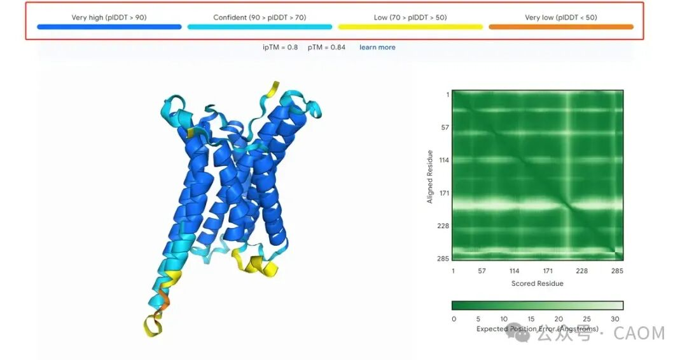
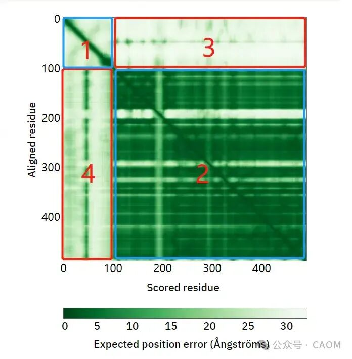
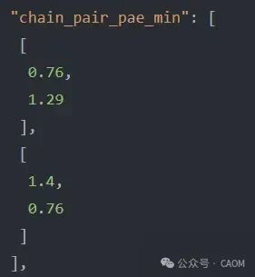

2024年诺贝尔化学奖揭晓，一半授予大卫·贝克（David Baker），以表彰他在计算蛋白质设计领域的卓越贡献；另一半则由德米斯·哈萨比斯（Demis Hassabis）和约翰·M·詹珀（John M. Jumper）共同获得，表彰他们在蛋白质结构预测方面取得的突破性成就。
AlphaFold 3 已具备药物设计的能力，能够精确预测药物中常见分子（如配体和抗体）的结构。这些分子可以与蛋白质结合，从而调控蛋白质在人体健康与疾病中的相互作用。在预测药物与蛋白质的相互作用（如配体与蛋白质、抗体与靶蛋白的结合）方面，AlphaFold 3 实现了前所未有的准确度。
AlphaFold2 是 DeepMind 在 2020 年发布的蛋白质结构预测模型，利用进化信息和深度学习方法，极大地提升了蛋白质结构预测的准确性。AlphaFold3 是 AlphaFold2 的升级版，增加了更多的功能并提升了性能。虽然 AlphaFold3 仍未正式发布，但根据预期，AlphaFold3 在多个方面可能做出改进。并且最新的De novo design of high-affinity protein binders with AlphaProte 中，利用af2和af3进行对binder的筛选，下面将主要从AlphaFold3的预测结果入手，分别解释输出文件中哪些指标可以作为筛选的标准。
网页版的AlphaFold3预测结果summary_confidences.json结果举例：
{"chain_iptm": [0.92,0.92],"chain_pair_iptm": [[0.92,0.92],[0.92,0.85]],"chain_pair_pae_min": [[0.76,1.29],[1.4,0.76]],"chain_ptm": [0.92,0.85],"fraction_disordered": 0.0,"has_clash": 0.0,"iptm": 0.92,"num_recycles": 10.0,"ptm": 0.92,"ranking_score": 0.92}
pLDDT（Predicted Local Distance Difference Test）是 AlphaFold 输出中的一个关键指标，用来评估模型对每个残基（氨基酸）位置的预测置信度。它反映了 AlphaFold 对蛋白质结构中每个位置的预测准确度。

数值范围：pLDDT 分数在 0 到 100 之间。
90-100：非常高的置信度，表示预测的结构非常可靠，通常是蛋白质的核心区域。
70-90：较高的置信度，表示该部分结构较为可信，但可能在局部有些不确定性。
50-70：中等置信度，通常表示该区域结构不稳定或柔性较大，如无序区域或环。
低于 50：低置信度，表示预测模型对该部分结构的准确性非常不确定，可能是无序区域或灵活的末端结构。
pLDDT 值越高，模型对该区域结构的预测越有信心，值越低表示模型对该区域的预测不确定性更高。
评估每个链的局部结构准确性：
和单链预测一样，pLDDT 在复合物预测中同样用于衡量每个残基的局部置信度。它帮助预测结构的可信度，尤其是复合物中不同链的独立结构。
通过分析每个链的 pLDDT 分数，可以确定哪个链的预测结构更为可靠，哪个链可能存在较大的不确定性。
识别链间相互作用界面：
复合物预测的关键之一是识别链间相互作用界面。pLDDT 分数在这些界面区域的表现尤为重要。
如果链间相互作用界面区域的 pLDDT 值较高（通常超过 70 或 80），说明 AlphaFold 对这些相互作用界面的预测非常有信心。
相反，若界面区域的 pLDDT 分数较低，则可能意味着该界面预测不稳定或不准确，提示用户需要进一步验证这些相互作用区域。
区分稳定区域与柔性区域：
复合物中常常有部分结构或链的区域具有较大的柔性，例如无序区域或暴露在溶剂中的片段。这些区域通常会有较低的 pLDDT 分数。
pLDDT 可以帮助识别这些柔性区域，使用户在分析复合物时区分哪些是稳定的核心结构，哪些是具有灵活性的区域。柔性较大的区域通常位于两个链之间或复合物的外围。
4.过滤低可信度结构：
在复合物预测中，如果某些链或某些区域的 pLDDT 分数低于一定阈值（如 50 以下），则可以认为这些区域的预测不太可信。
在分析复合物时，用户可以根据 pLDDT 对低置信度的区域进行过滤，保留置信度高的核心结构。这在处理复杂的多链复合体时尤为有用，可以避免被不准确的预测结果误导。
PAE（Predicted Aligned Error，预测比对误差）是 AlphaFold2 用来衡量模型对两个残基在预测结构中相对位置的置信度的指标。PAE 的定义是，当预测结构与实际结构在某个残基 Y 上对齐时，残基 X 的预期位置误差，单位为埃（Å）。
因此，PAE 实际上是衡量 AlphaFold2 对不同结构域的排列是否合理以及这些结构域在预测结构中的相对位置是否准确的置信度。
低 PAE 值（接近 0） 表示模型对两个残基或结构域的相对位置预测很有信心。
高 PAE 值 表示模型对残基或结构域的相对位置存在不确定性，表明这些预测结构的部分可能需要更多关注或可能本身是柔性的。
在蛋白质复合物预测中，PAE（Predicted Aligned Error，预测比对误差）同样具有重要作用，帮助评估多链复合物中不同蛋白质或结构域之间相对位置的预测置信度。由于复合物预测涉及多个蛋白质或不同亚基的相互作用，PAE 可以帮助用户理解这些蛋白质或亚基之间的相对位置准确性，从而评估复合物整体预测的可靠性。
评估链间相互作用的准确性：
在复合物中，PAE 矩阵用于评估不同蛋白质链之间相互作用区域的预测精度。如果链间相互作用区域的 PAE 值较低（即预测误差小），则说明这些区域的相对位置较为可信，预测较为可靠。相反，较高的 PAE 值意味着这些相互作用区域的预测不太准确或可信。
识别相互作用界面：
PAE 有助于识别复合物中两个蛋白质或亚基的相互作用界面是否可靠。如果界面区域的 PAE 值较低，说明 AlphaFold 对该界面的预测较为自信，反之，则界面区域可能存在不确定性。
多链蛋白质的结构排列：
在复合物预测中，不仅需要预测每个蛋白质链的内部结构，还需要预测它们在复合物中的相对排列。PAE 可以帮助识别这些蛋白质链在复合物中的位置是否准确，如果不同链之间的 PAE 值较大，表示复合物的整体排列可能存在问题。
揭示柔性区域和结构域运动：
PAE 也能够揭示复合物中可能具有较大柔性的区域或运动较大的结构域。如果某些链或结构域之间的 PAE 值较高，这可能表明这些区域是灵活的，或者模型对这些区域的相对位置预测不确定。这对于分析蛋白质复合物中可能发生的运动或构象变化非常有帮助。
在很多文章中，都是PAE的数值作为过滤的标准，例如Improving de novo Protein Binder Design with Deep Learning 中以AF2预测结果中pae interaction<10作为binder过滤的阈值。在最新的AF3中，AlphaProteo以 min pae interaction < 1.5 作为过滤的标准。同样对于pae，过滤的阈值确实不一样的，他们是怎么样得到这个数值的呢？下面我将以PAE矩阵为基础，详细的介绍计算方法。

首先，简单的将PAE预测分成四个区域1，2，3，4。那么1和2分别代表的是binder和target protein，3和4则代表binder和target protein的互作，过滤的数值就是通过3和4来计算的。并且我们要知道，虽然3和4是对称的，但是他们的数值确实不同的。
在AF2，Improving de novo Protein Binder Design with Deep Learning 中：
分别计算区域3和区域4的均值mean1和mean2；
再进一步计算mean1和mean2的均值，得到pae interaction，并利用这个数值进一步进行过滤。
在AF3，AlphaProteo中：
分别计算区域3和区域4的最小值min1和min2；
再进一步计算min1和min2的最小值，得到 min pae interaction ，并利用这个数值进一步进行过滤。
在AF3的网页版预测结果中，我们可以直接看summary_confidences中的 chain_pair_pae_min结果，以上面的结果举例，

图3 pae result
图3 pae result
如图3所示，[[0.76,1,29],[1.4,0.76]]，在图2中代表的区域分别是[[1,3],[4,2]]每个区域的最小值，我们直接可以通过这个结果得到1.29作为min pae interaction来进一步过滤。
Predicted Template Modelling (pTM) 是 AlphaFold2 中的一种扩展评分，用于评估预测的蛋白质结构的整体准确性，特别是对不同结构域和多链复合物的相对位置进行评估。与用于评估局部结构准确性的 pLDDT（predicted Local Distance Difference Test） 不同，pTM 主要针对蛋白质的全局结构，包括结构域之间和不同链之间的相对关系。
全局结构评估：pTM 评估的是蛋白质结构中不同残基或结构域的相对位置是否准确，而不仅仅是单个残基或小范围区域的精度。它通过综合多个残基之间的距离误差，来估计蛋白质结构的整体准确性。
基于模板建模的得分：pTM 评分与经典的模板建模（TM-score）类似。TM-score 是一种用于评估两个蛋白质结构整体相似度的标准，而 pTM 是 AlphaFold 在其预测模型中引入的，用来评估整个预测结构（或复合物）的准确性。
结合 PAE 矩阵计算：pTM 结合了 AlphaFold 的 PAE（Predicted Aligned Error）矩阵数据，利用这些残基之间的预测误差，推导出整个结构的相对置信度。它不仅考虑了单个残基的局部结构精度，还考虑了残基对之间的全局距离关系。
在AF3的summary_confidences结果中，有两个ptm结果：
第一个是chain_ptm ，一个 [num_chains] 数组，给出每个链与所有其他链之间的接口的平均置信，上面json例子中，[0.92,0.85]则分别代表target protein和binder的ptm，AlphaProt，则利用ptm binder来进一步过滤。
第二个是ptm，0-1 范围内的标量，表示完整结构的预测 TM 分数。
pTM 是一个综合指标，用于衡量 AlphaFold-Multimer 对复合物整体结构的预测效果。它是预测结构与假设真实结构之间的预测 TM 评分。TM 评分超过 0.5 表示复合物的整体预测折叠可能与真实结构相似；而 TM 评分低于 0.5 则意味着预测结构可能是错误的：pTM 评分遵循相同的定义。需要谨慎解读 pTM 评分。例如，假设一种情况，其中一个相互作用的蛋白质较大且结构预测正确，而较小的伴侣蛋白结构预测不准确。结果，复合物的 pTM 评分可能会受到较大蛋白质的主导，显示出超过 0.5 的 pTM 评分。相比之下，ipTM 测量形成蛋白质-蛋白质复合物的亚基的预测相对位置的准确性。
iPTM（interface predicted TM-score） 是一种度量，用于评估预测的蛋白质-蛋白质复合物中蛋白质间界面的准确性。它基于 TM-score 的概念，但专注于预测的蛋白质复合物中不同蛋白质之间的界面相互作用。
评估界面预测的可靠性：iPTM 主要用于评估蛋白质复合物中，两个或多个蛋白质之间相互作用界面的预测质量。一个较高的 iPTM 值表明 AlphaFold 对这些蛋白质间相互作用界面的预测是可靠的。
识别界面错误：iPTM 值高于 0.8 代表高置信度的高质量预测，而低于 0.6 的值表明预测可能失败。iPTM 介于 0.6 和 0.8 之间时属于灰色区域，预测可能正确也可能错误。这些数值假设使用了多个循环步骤进行建模，因此预测过程达到了某种程度的收敛。在大规模的蛋白质-蛋白质相互作用筛选中，通常会使用为预测速度优化的设置，例如很少或不使用循环步骤。在这种情况下，iPTM 阈值低至 0.3 也可以用于初步筛选；
ipTM 可能比 pTM 对用户更有用。这是因为子单元相对位置的预测质量和整个复杂预测的质量是高度相互依赖的：如果子单元的相对位置正确（如高 ipTM 分数所反映），用户可以期望整个综合体也是正确的。
在AF3的summary_confidences结果中，有三个iptm结果：
chain_iptm ：一个 [num_chains] 数组，给出每个链与所有其他链之间的接口的平均置信度（ipTM。当我们关心该链与复合体的其余部分结合的位置并且我们不知道它与哪些其他链相互作用时，可用于对特定链进行排名。
chain_pair_iptm ：一个 [num_chains, num_chains] 数组。数组的非对角元素 (i, j) 包含仅限于链 i 和 j 中的令牌的 ipTM。对角元素 (i, i) 包含限制于链 i 的 pTM。我的理解和上面提到的chain_pair_pae_min表示的数值含义类似。
iPTM：一个范围为 0-1 的标量，表示预测的界面 TM 分数（对预测界面的置信度），适用于结构中的所有界面。
fraction_disordered ：0-1 范围内的标量，指示预测结构的哪一部分是无序的，通过可访问的表面积来测量
has_clash ：一个布尔值，指示结构是否具有大量冲突原子（超过链的 50%，或具有超过 100 个冲突原子的链）。
ranking_score ：[-100, 1.5]范围内的标量，可用于排名预测，它将 ptm、iptm、fraction_disordered 和 has_clash 合并为一个数字，公式如下：0.8 × ipTM + 0.2 × pTM + 0.5 × disorder − 100 × has_clash
PAE: A measure of global confidence in AlphaFold2 predictions
De novo design of high-affinity protein binders with AlphaProteo
AlphaFold 服务器 --- AlphaFold Server (google.com)